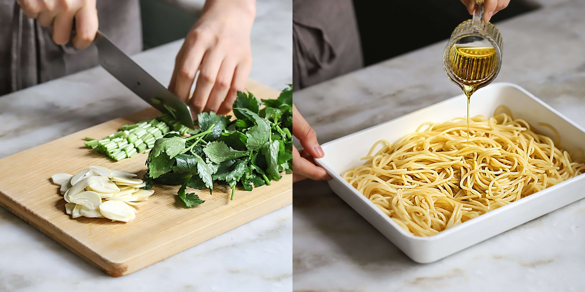
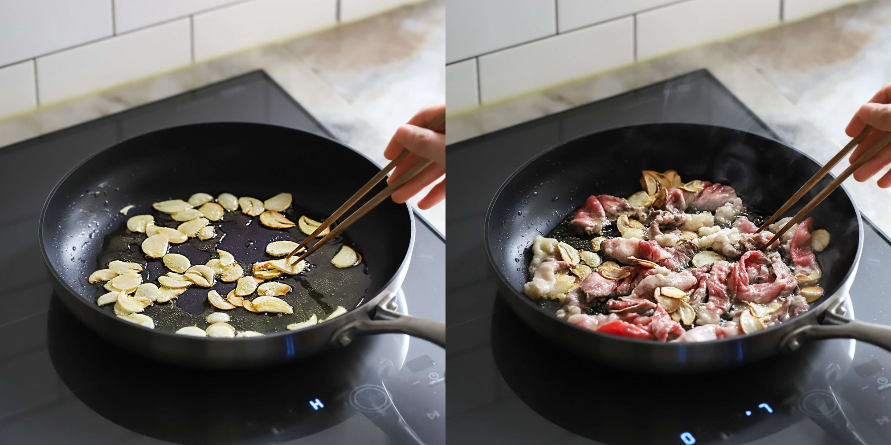
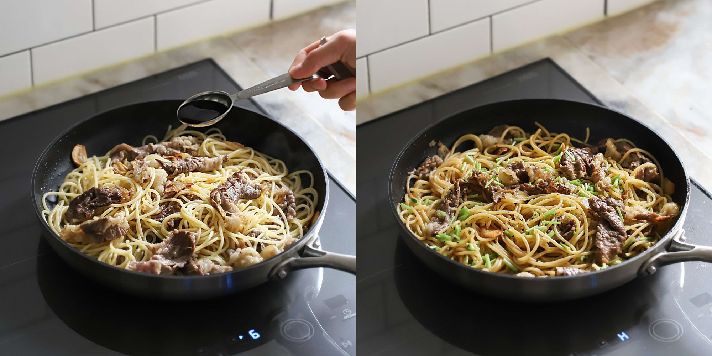
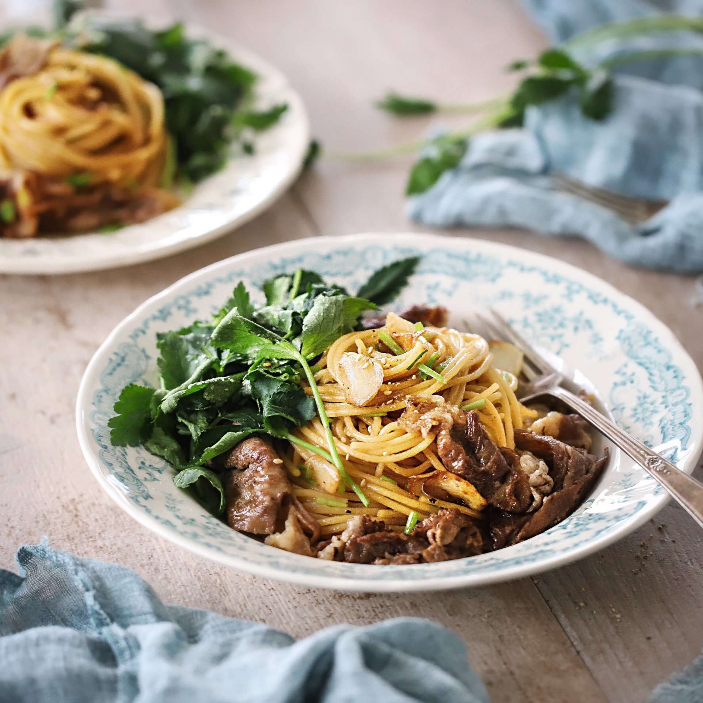

Mì xào bò kiểu Hàn ngon, lạ miệng
Mì xào bò là món ăn mềm, ngon, giàu dinh dưỡng tốt cho cơ thể, đặc biệt trong đầu ngày vội vã thì nó là lựa chọn tuyệt vời cho bữa sáng nhanh, gọn mà vẫn ngon và đủ chất!

Bạn cần chuẩn bị những nguyên liệu sau cho món mì xào bò kiểu Hàn:
- 80g rau cần tây
- 200g thịt bò
- 200g mì spaghetti
- 5 tép tỏi
- 30ml nước tương
- 15g đường
- Một ít dầu oliu, muối, hạt tiêu, vừng.
Chế biến: Tỏi bóc vỏ thái lát. Rau cần tây rửa sạch, phần cuống thái khúc dài 2cm, phần lá thái khúc dài 6cm. Cho 2 lít nước vào nồi cùng chút muối đun sôi sau đó cho mì vào luộc chín trong khoảng 5 phút. Vớt mì ra rồi trộn với một ít dầu oliu cho tơi.
Cho một ít dầu ăn vào chảo, thêm tỏi băm vào chiên thơm trong khoảng 2 phút. Đổ thịt bò vào xào cho đến khi thịt chuyển màu.
Cho mì vào cùng nước tương, đường, gốc cần tây và xào khoảng 3 phút. Tiếp đó nêm thêm muối và hạt tiêu cho vừa ăn rồi thêm phần lá rau cần tây vào đảo qua rồi tắt bếp. Lấy mì xào bò ra đĩa, thêm chút vừng rang vào là xong.
Thành phẩm: Mì xào bò là món ăn quen thuộc, dễ làm và được nhiều người yêu thích nhưng để có một món mì xào ngon với sợi mì dai ngon mềm vừa phải, thịt bò vẫn giữ nguyên được vị ngọt mềm không dai thì bạn cần một số bí quyết nhỏ như thời gian luộc mì hay cách xào thịt với mì chẳng hạn. Chính vì thế nên công thức trên đây sẽ giúp bạn có một đĩa mì xào bò tuyệt ngon đấy nhé!
